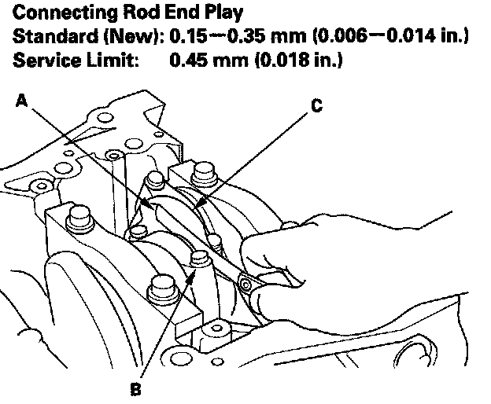
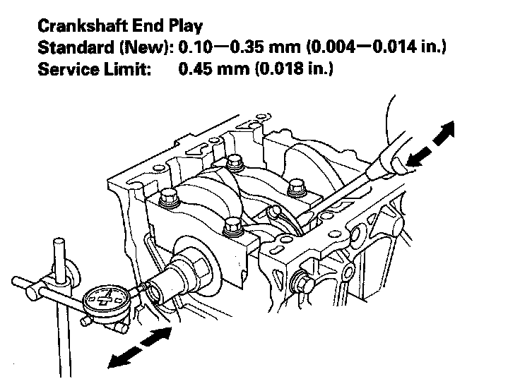

Connecting Rod and Crankshaft End Play Inspection
Connecting Rod and Crankshaft End Play Inspection1. Remove the oil pump.
2. Remove the baffle plate.
3. Measure the connecting rod end play with a feeler gauge (A) between the connecting rod (B) and crankshaft (C).

4. If the connecting rod end play is out-of-tolerance, install a new connecting rod and recheck. If it is still out-of-tolerance, replace the crankshaft.
5. Push the crankshaft firmly away from the dial indicator, and zero the dial against the end of the crankshaft. Then pull the crankshaft firmly back toward the indicator; the dial reading should not exceed the service limit.

6. If the end play is excessive, replace the thrust washers and recheck. If it is still out-of-tolerance, replace the crankshaft.